Basics of machine learning
The (supervised) ML approach: collect a training set of images with known labels and feed these into a machine learning algorithm, which will (if done well), automatically produce a “program” that solves this task.
Every machine learning algorithm consists of three different elements:
- The hypothesis class: the “program structure”, parameterized via a set of parameters, that describes how we map inputs (e.g., images of digits) to outputs (e.g., class labels, or probabilities of different class labels) .
- The loss function: a function that specifies how “well” a given hypothesis (i.e., a choice of parameters) performs on the task of interest .
- An optimization method: a procedure for determining a set of parameters that (approximately) minimize the sum of losses over the training set.
supervised 监督 hypothesis 假设 parameters 参数
Example: softmax regresssion
Multi-class classification setting
k-class classification setting:
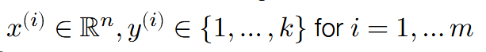
- 𝑛 = dimensionality of the input data
- 𝑘 = number of different classes / labels
- 𝑚 = number of points in the training set
Where x{i} represents n-dimensional vector, y{i} represents discrete scalars, this will be discussed below.
re gresssion 回归 dimensionality 维度
Linear hypothesis function
Hypothesis function maps inputs 𝑥 ∈ ℝ𝑛 to 𝑘-dimensional vectors:
$$ h:\mathbb{R}^{n}\rightarrow \mathbb{R}^{k}
$$
where ℎ𝑖(𝑥) indicates some measure of “belief” in how much likely the label is to be class 𝑖 (i.e., “most likely” prediction is coordinate 𝑖 with largest ℎ𝑖(𝑥)).
A linear hypothesis function uses a linear operator (i.e. matrix multiplication) for this transformation:
$$ \ h_{\theta}(x)=\theta^{T}x
$$
where T represents the transpose of the matrix, theta represents matrix with n rows and n columns.
$$ \theta\in\mathbb{R}^{n\times k}
$$
Often more convenient (and this is how you want to code things for efficiency) to write the data and operations in matrix batch form.
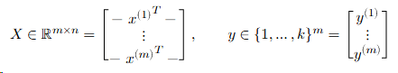
Then the linear hypothesis applied to this batch can be written as
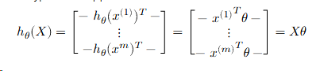
Loss function #1: classification error
The simplest loss function to use in classification is just the classification error, i.e., whether the classifier makes a mistake a or not.
We typically use this loss function to assess the quality of classifiers Unfortunately, the error is a bad loss function to use for optimization, i.e., selecting the best parameters, because it is not differentiable.
differentiable 不可微分的
Loss function #2: softmax / cross-entropy loss
Convert the hypothesis function to a “probability” by exponentiating and normalizing its entries (to make them all positive and sum to one).
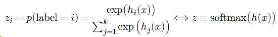
define a loss to be the (negative) log probability of the true class: this is called softmax or cross-entropy loss.
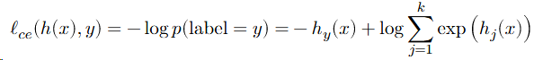
cross-entropy 交叉熵 exponentiating 求幂 normalizing 标准化 negative log 负对数
The softmax regression optimization problem
The core machine learning optimization problem.
The third ingredient of a machine learning algorithm is a method for solving the associated optimization problem, i.e., the problem of minimizing the average loss on the training set
$$ \mathrm{minimize}\;\frac{1}{m}\sum{i=1}^{m}\ell(h{\theta}(x^{(i)}),y^{(i)})
$$
For softmax regression (i.e., linear hypothesis class and softmax loss):
$$ \operatorname*{mininize}\ {\frac{1}{m}}\sum{i=1}^{m}\ell{c e}(\theta^{T}x^{(i)},y^{(i)})
$$
Optimization: gradient descent
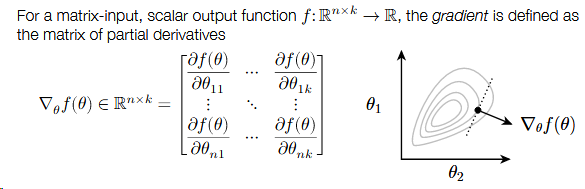
The derivative of a function was equal to the slope of that function. Well, that same intuition holds in higher dimensions too.
Gradient points in the direction that most increases 𝑓 (locally).
To minimize a function, the gradient descent algorithm proceeds by iteratively taking steps in the direction of the negative gradient.
$$ \theta:=\theta-\alpha\nabla_{\theta}f(\theta)
$$
where 𝛼 > 0 is a step size or learning rate.
gradient 梯度 descent 下降 partial derivatives 偏导数 slope 斜率
Stochastic gradient descent
If our objective (as is the case in machine learning) is the sum of individual losses, we don’t want to compute the gradient using all examples to make a single update to the parameters.
Instead, take many gradient steps each based upon a minibatch (small partition of the data), to make many parameter updates using a single “pass” over data.
stochastic 随机 parameters 参数 minibatch 小批量
for vector ℎ ∈ ℝ𝑘
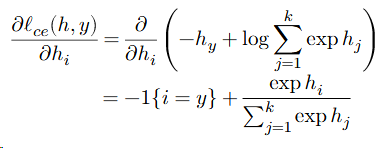
So
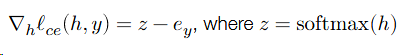
e is clalled the unit basis(-1{i=y}).
But in the left, it exists the chain rule of multivariate calculus ...
Approach #1 (a.k.a. the right way):
Use matrix differential calculus, Jacobians, Kronecker products, and vectorization
Approach #2 (a.k.a. the hacky quick way that everyone actually does):
Pretend everything is a scalar, use the typical chain rule, and then rearrange / transpose matrices/vectors to make the sizes work 😱 (and check your answer numerically)
multivariate calculus 多元微积分 differential 微分 Jacobians 雅可比行列式 transpose 转置
the “derivative” of the loss:
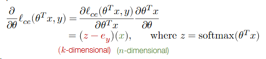
Now it is k×1 and n×1, but we need n×k matrix. So
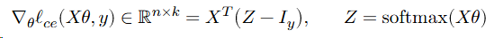
So, putting it all together.
Repeat until parameters / loss converges:
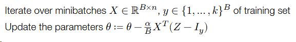